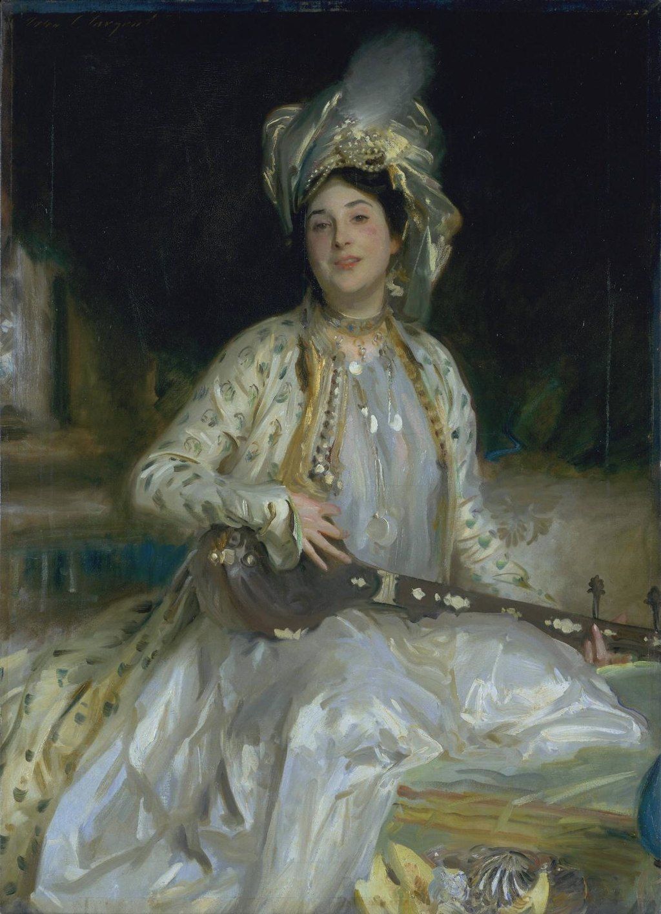

<head>
<meta charset="UTF-8" />
<meta name="keywords" content="drawing, painting" />
<meta name="description" content="drawings by Sunjy" />
<title>Sunjy</title>
<link rel="shortcut icon" type="image/x-icon" href="../../mImages/mCommon/favicon.ico" media="screen" />
<link rel="stylesheet" type="text/css" href="../../mCsses/mCommon/mCssA.css" />
<link rel="stylesheet" type="text/css" href="../../mCsses/mCommon/mCssB.css" />
<link rel="stylesheet" type="text/css" href="../../mCsses/mCommon/mCssC.css" />
<link rel="stylesheet" type="text/css" href="../../mCsses/mCommon/mCssD.css" />
<link rel="stylesheet" type="text/css" href="../../mCsses/mContent/mCssA.css" />
<link rel="stylesheet" type="text/css" href="../../mCsses/mContent/mCssB.css" />
<link rel="stylesheet" type="text/css" href="../../mCsses/mContent/mCssC.css" />
<link rel="stylesheet" type="text/css" href="../../mCsses/mContent/mCssD.css" />
</head>
<script type="text/javascript" src="../../mScripts/mContent/mContentAA.js" /></script>
<script type="text/javascript" src="../../mScripts/mContent/mContentAB.js" /></script>
<script type="text/javascript" src="../../mScripts/mContent/mContentAC.js" /></script>
<script type="text/javascript" src="../../mScripts/mContent/mContentAD.js" /></script>
<script type="text/javascript"></script> 
<script type="text/javascript">
document.write('<div class="mImgAbsolute"></div>');
/*
document.write('<p class="mFontSizeBColor" />From a white paper...</p>');
document.write('<table class="center"><tr><td>');
document.write('');
document.write('</td></tr></table>');
*/
</script>


<script type="text/javascript">
document.write('<p class="mFontSizeBColor" />Portrait of Almina Daughter of Asher Wertheimer</p>');
document.write('<p class="mFontSizeSColor" />“Portrait of Almina Daughter of Asher Wertheimer” by John Singer Sargent was the last in the series of Sargent’s portraits of the Wertheimer family. The Wertheimer portraits are a series of twelve portrait paintings made by John Singer Sargent of and for the British art dealer Asher Wertheimer (1843-1918) and his family. The series was Sargent’s largest private commission.<br><br>Almina was Asher Wertheimer’s fifth daughter. She is shown in an oriental costume of a white Persian dress and a turban entwined with pearls. The white and green over-jacket was a studio prop, as was the musical instrument. Paintings of European women cast as alluring ‘orientals’ were fashionable at the turn of the twentieth century. Almina (1886-1928), married Antonio Pandelli Fachiri (1886-1928/9) in 1915.<br><br>Asher Wertheimer was born in London. His father, Samson, was born in Germany and became a leading art dealer in London, and Asher continued the business from premises on Bond Street after his father’s death. Asher married his wife Flora (1846-1922) in 1873; she was the daughter of another London art dealer. The family became friends of John Singer Sargent. He often dined at their home, which was decorated with eight of the family portraits. Wertheimer commissioned Singer Sargent to paint two portraits to celebrate his 25th wedding anniversary in 1898, and ten more commissions followed in the next decade.<br></p>');
document.write('<table class="center" /><tr><td>');
document.write('<br>Almina was Asher Wertheimer’s fifth daughter. She is shown in an oriental costume of a white Persian dress and a turban entwined with pearls. The white and green over-jacket was a studio prop, as was the musical instrument. Paintings of European women cast as alluring ‘orientals’ were fashionable at the turn of the twentieth century. Almina (1886-1928), married Antonio Pandelli Fachiri (1886-1928/9) in 1915.<br><br>Asher Wertheimer was born in London. His father, Samson, was born in Germany and became a leading art dealer in London, and Asher continued the business from premises on Bond Street after his father’s death. Asher married his wife Flora (1846-1922) in 1873; she was the daughter of another London art dealer. The family became friends of John Singer Sargent. He often dined at their home, which was decorated with eight of the family portraits. Wertheimer commissioned Singer Sargent to paint two portraits to celebrate his 25th wedding anniversary in 1898, and ten more commissions followed in the next decade.<br>" />');
document.write('</td></tr></table>');
</script>


